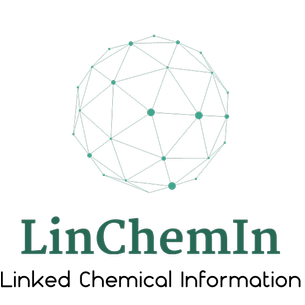

LinChemIn: Linked Chemical Information

Useful Links
GitHub page
Git source code repository
The bug tracker
Q&A, Discussion
LinChemIn at LinkedIn
The LinchemIn Blog
Online Documentation
Python API
A downloadable
version of the full HTML documentation
Other Stuff
Conda binary packages for LinchemIn
LinChemIn Knime nodes
recipes for building using the excellent conda package manager
Contributed by ?.
homebrew formula for building on the Mac
Contributed by ?.
Development infrastructure for the LinChemIn software provided by GitHub.